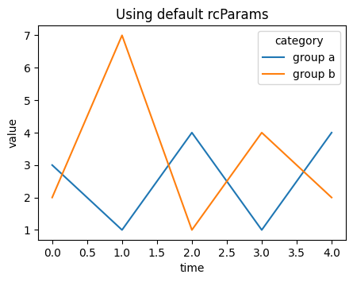
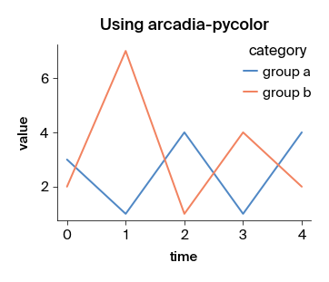
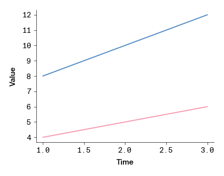
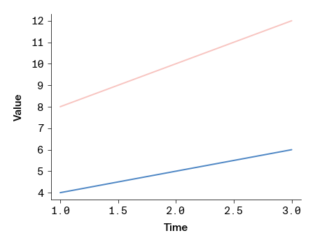
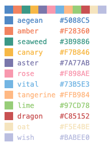
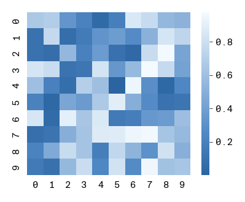
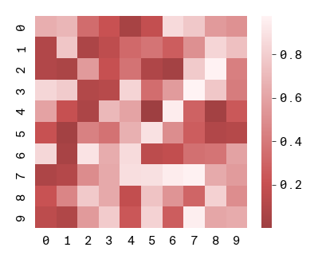
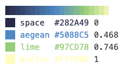

Using arcadia-pycolor to make figures in Python
arcadia-pycolor is a Python package that provides a set of color palettes and convenience functions to style plots so that they are compatible with Arcadia's style guide. This notebook provides a quick introduction to arcadia_pycolor and how to use it to style matplotlib and seaborn plots so that they comply with the Arcadia style guide, largely following the Quickstart Guide.
We'll cover the following topics:
- Installing
arcadia-pycolor - Configuring
matplotlibdefaults - Accessing and using colors, palettes, and gradients
- Using
arcadia-pycolorto style plots
1. Install the arcadia-pycolor package
We've designed arcadia-pycolor as a Python package that is distributed via PyPI. This means it can be installed using pip just like any other Python package. In a virtual environment of your choice, run the following command in your terminal:
pip install arcadia-pycolor
Requirements
arcadia-pycolor requires Python >=3.9 and has the following dependencies (which are detected and installed automatically when you install arcadia-pycolor using pip):
- matplotlib (version 3.7 and above, except version 3.8.0)
- colorspacious (version 1.1.2 and above)
Additionally, arcadia-pycolor checks whether you have the "Suisse Int'l" family of fonts installed on your system. If these fonts aren't installed, arcadia-pycolor will default to "Arial". To download the "Suisse Int'l" font family, check out the Brand Assets page in Notion.
The package can then be imported in notebooks or scripts using the following command:
import arcadia_pycolor as apc
2. Set the default matplotlib styles
The package provides a function called apc.mpl.setup that sets the default matplotlib styles to match the Arcadia style guide. This function only needs to be called once, ideally at the beginning of the notebook or script. The styles it sets will automatically apply to all plots in the notebook or script.
What does apc.mpl.setup do?
- Sets the default font to "Suisse Int'l" (or "Arial" if not installed).
- Changes default axis, axis label, legend, and color cycler styles to match the Arcadia style.
- Registers Arcadia's colors, palettes, and gradients with
matplotlib.
import matplotlib as mpl
import matplotlib.pyplot as plt
def example_plot(title: str = "Example plot"):
plt.figure(figsize = (5, 3.5))
plt.plot([3, 1, 4, 1, 4], label = "group a")
plt.plot([2, 7, 1, 4, 2], label = "group b")
plt.xlabel("time")
plt.ylabel("value")
plt.legend(title = "category")
plt.title(title)
# Plot using default rcParams
example_plot("Using default rcParams")
plt.show()
# Plot using apc.mpl.setup()
apc.mpl.setup()
example_plot("Using arcadia-pycolor")
plt.show()

Fontconfig warning: ignoring UTF-8: not a valid region tag

Some aspects of the style guide can only be applied to individual plots. The apc.mpl.style_plot function can be used to apply these styles to a single plot. This function takes a Matplotlib Axes object as input.
If an Axes object is not passed to style_plot, the function will style the current plot (internally, style_plot uses plt.gca() to get the "current" Axes object).
By default, the style_plot function capitalizes the x- and y-axis labels and styles the legend, if one exists. In addition, it has a few optional arguments that can be used to customize the styling of the x- and y-axis tick labels:
monospaced_axessets the tick labels of the x- and/or y-axis to a monospaced font.categorical_axesadjusts the x- and/or y-axis styles to be more readable when the axis represents a categorical variable.colorbar_existstells the function to style the colorbar, if one exists.
example_plot("Using mpl.style_plot")
apc.mpl.style_plot(monospaced_axes="both")
plt.show()

3. Using Arcadia colors
The Arcadia style guide defines sets of colors called "color palettes" that should be used in all figures. The arcadia_pycolor package provides easy access to both individual colors and to pre-defined palettes and gradients.
Within arcadia-pycolor, all of Arcadia's named colors are available as variables. For example, you can access and preview the color aegean as follows. When the cell is evaluated, it will output the name and hex code of the color alongside a swatch showing what the color looks like:
apc.aegean
You can pass colors directly to matplotlib functions to style plots.
Named colors are also registered to matplotlib using the prefix "apc:". For example, "apc:aegean" is a valid color argument for matplotlib functions.
import matplotlib.pyplot as plt
import arcadia_pycolor as apc
plt.plot([1, 2, 3], [4, 5, 6], color=apc.rose)
plt.plot([1, 2, 3], [8, 10, 12], color="apc:aegean")
plt.xlabel("time")
plt.ylabel("value")
apc.mpl.style_plot(monospaced_axes = "both")
plt.show()

Using color palettes
Individual colors are organized into groups called "palettes." The palettes themselves have names and are accessible as attributes of the apc.palettes module. For example, we can rewrite the previous example to use the first two colors in the "primary" palette:
plt.plot([1, 2, 3], [4, 5, 6], color=apc.palettes.primary.colors[0])
plt.plot([1, 2, 3], [8, 10, 12], color=apc.palettes.secondary.colors[1])
plt.xlabel("time")
plt.ylabel("value")
apc.mpl.style_plot(monospaced_axes="both")
plt.show()

To see all of the colors in a palette, evaluate the palette object in a notebook cell. This outputs a list of color swatches with the names and hex codes of the colors in the palette:
apc.palettes.primary

Using color gradients
The Arcadia style guide also defines continuous color gradients that can be used in plots like heatmaps. These gradients are accessible as attributes of the apc.gradients module. To use a gradient in a matplotlib or seaborn plot, you can convert it to a matplotlib colormap using the to_mpl_cmap method. For example, to use the "blues" gradient in a heatmap:
import numpy as np
import seaborn as sns
data = np.random.rand(10, 10)
sns.heatmap(data, square = True, cmap=apc.gradients.blues.to_mpl_cmap())
apc.mpl.style_plot(categorical_axes="both", monospaced_axes="both", colorbar_exists=True)
plt.show()

Gradients are also registered to matplotlib using the prefix "apc:". For example, "apc:reds" is a valid colormap argument for matplotlib or seaborn functions:
sns.heatmap(data, square = True, cmap="apc:reds")
apc.mpl.style_plot(categorical_axes="both", monospaced_axes="both", colorbar_exists=True)
plt.show()

Just like palettes, gradients can be visualized by evaluating a gradient object in a Jupyter notebook cell. This outputs a gradient swatch showing the colors in the gradient.
apc.gradients.viridis

4. More resources
You can find more resources and examples in the arcadia-pycolor documentation.